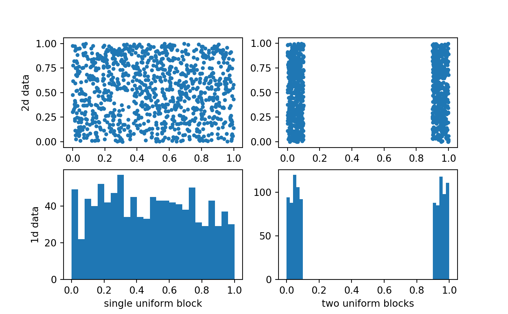
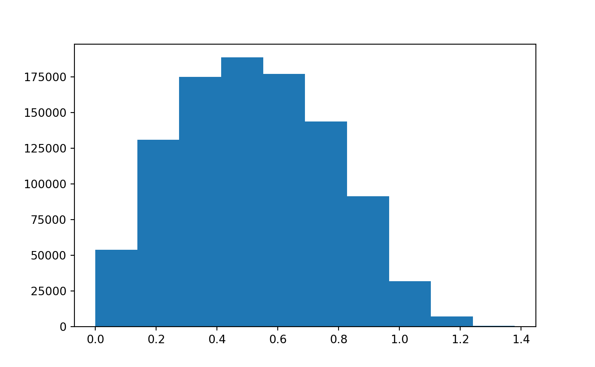
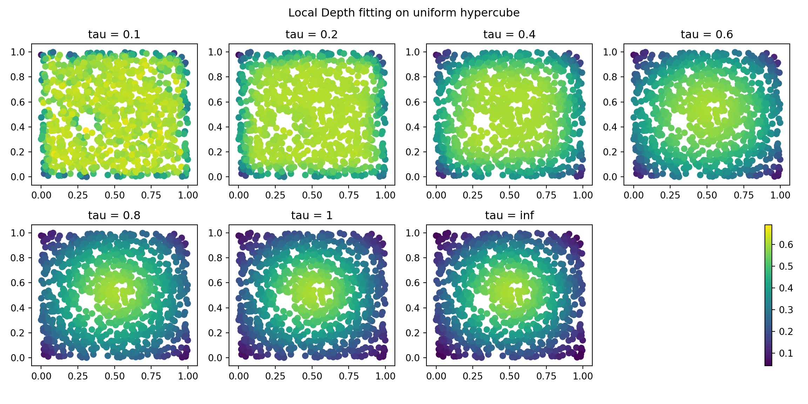
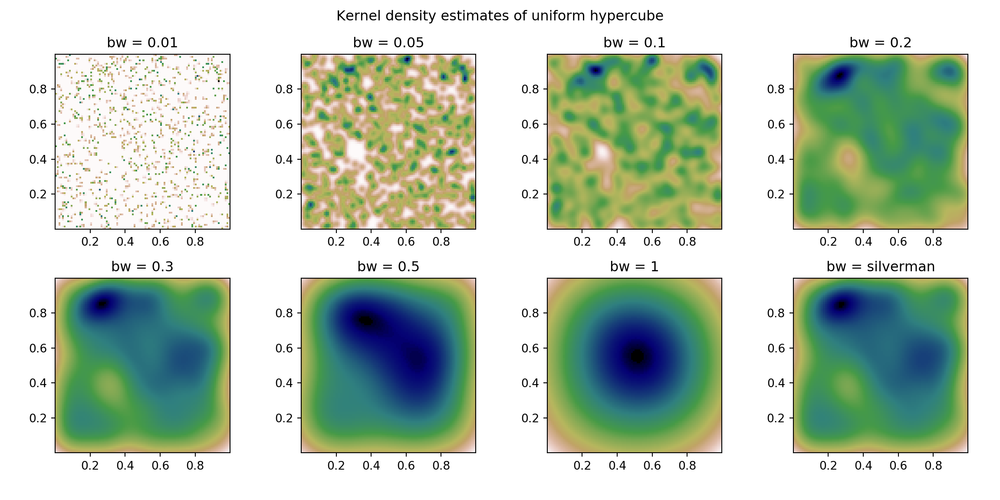
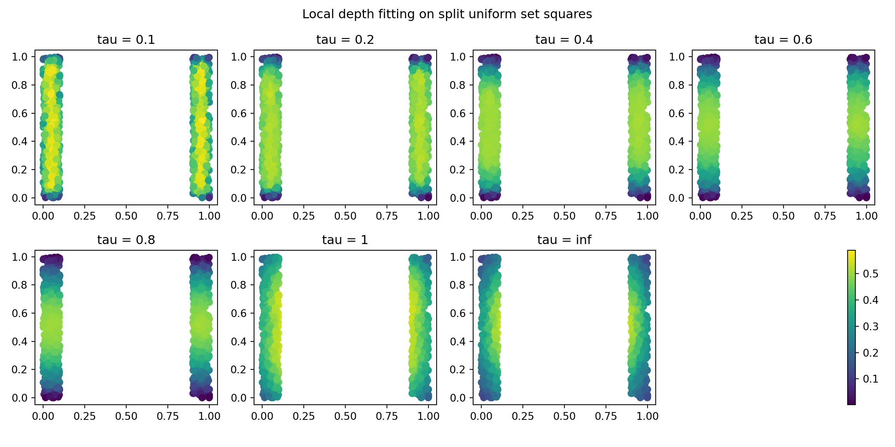
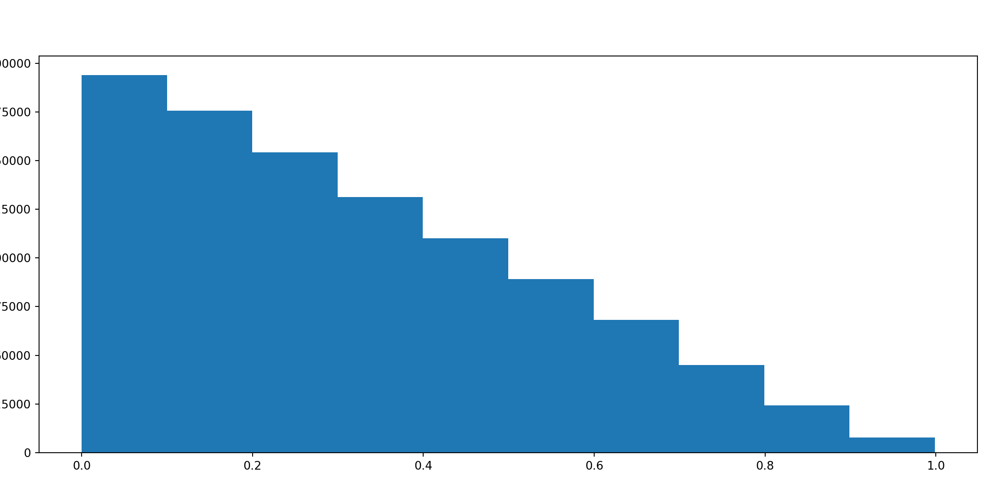
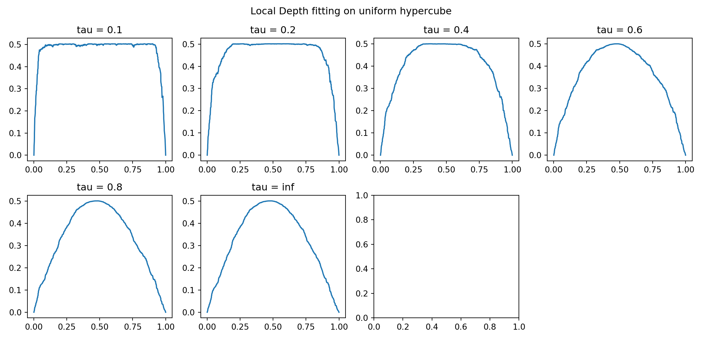
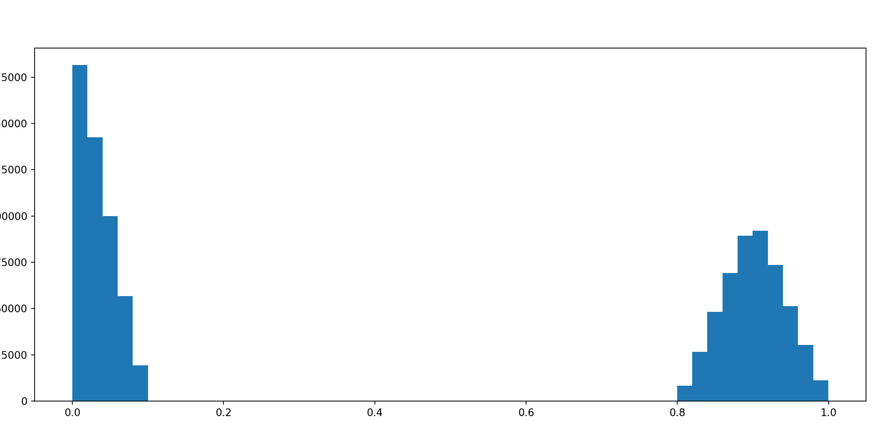
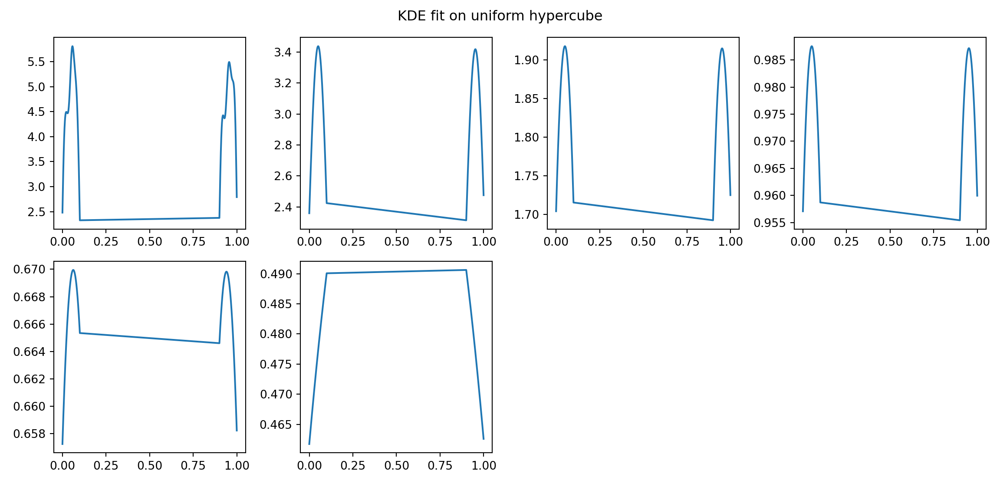

Comparing Depth and Density
Source:vignettes/not-built-vignettes/Comparing-Depth-and-Density.Rmd
Comparing-Depth-and-Density.Rmdimport numpy as np
import matplotlib.pyplot as plt
import pandas as pd
import scipy.stats
import scipy
import scipy.spatial
import progressbarThe difference between density and depth
In this vignette, we will be attempting to compare depth (distance based) to a Guassian KDE - to emphasis that depth (local or otherwise) focuses more on geometric features of centrality than kernel density destimates. This will be done using data in 1d and 2d euclidean space.
We will be using 2 different data sets, as show below and have versions of them in 1d and 2d euclidean space.
This vignette is actually written in python using the reticulate package from R studio. This was done for some speed gains. It’s possible that we will craft this into a fast R approach later in this package’s life.
the data
np.random.seed(1)
single_2d = np.random.uniform(size = (1000,2))
single_1d = np.random.uniform(size = 1000)
double_2d = np.vstack([
np.vstack([np.random.uniform(low = 0, high = .1,size = (500)),
np.random.uniform(low = 0, high = 1,size = (500))]).T,
np.vstack([np.random.uniform(low = .9, high = 1,size = (500)),
np.random.uniform(low = 0, high = 1,size = (500))]).T])
double_1d = np.hstack([np.random.uniform(low = 0, high = .1,size = (500)),
np.random.uniform(low = .9, high = 1,size = (500))])
2d data example
Let’s first do the 2d data examples (I think they’re really good at emphasising the differences between the two). As you can see from the data visualization
1 block distribution
Let’s start with the 2d euclidean data first. For the 1 block of uniform distribution, we will examine different values of \(\tau\) relative to the local distance depth defined above.
But before we do, let’s look at the distribution to distances:
dist_mat = scipy.spatial.distance_matrix(x = single_2d, y = single_2d)
plt.hist(dist_mat.ravel());
plt.show()
Local Depth and Global Depth
I’ve hidden the creation of a python version of EpiCompare::local_distance_depth_function in this document, but it’s coded the same way - just a little faster in python than R.
Below are visualization of the different local depth scores (relative to \(\tau\)).
tau_list = [.1,.2,.4,.6,.8,1,np.inf]
bar = progressbar.ProgressBar()
ldd = list()
for tau in bar(tau_list):
ldd.append(local_distance_depth_function(dist_mat, tau))##
N/A% (0 of 7) | | Elapsed Time: 0:00:00 ETA: --:--:--
14% (1 of 7) |### | Elapsed Time: 0:00:00 ETA: 0:00:00
28% (2 of 7) |####### | Elapsed Time: 0:00:00 ETA: 0:00:01
42% (3 of 7) |########### | Elapsed Time: 0:00:04 ETA: 0:00:16
57% (4 of 7) |############## | Elapsed Time: 0:00:19 ETA: 0:00:43
71% (5 of 7) |################## | Elapsed Time: 0:00:42 ETA: 0:00:47
85% (6 of 7) |###################### | Elapsed Time: 0:01:12 ETA: 0:00:29
100% (7 of 7) |##########################| Elapsed Time: 0:01:42 Time: 0:01:42
We really want to compare this to smoothing of a Guassian KDE to be able to really examine the differences.
KDE Estimate
The below estimates are with varying bandwidth parameters for the Guassian KDE estimates. Note that the final “bw = silverman” uses the Silverman’s Method to select the bandwidth parameter.

Comparing the Differences
It should be pretty clear these two approaches act differently. And, with the uniform structure we capture different things. Arguably the depth approach better captures the geometric structure of the uniform distribution. You can image a Gaussian distribution (instead of uniform distribution), would show much less differences.
Let’s move onto another two-dimensional dataset that has different, but also interesting, structure - 2 disjoint uniform blocks.
2 block distribution
Again, let’s first look at the distribution of distances between data points. 
Local Depth and Global Depth
tau_list2 = [.1,.2,.4,.6,.8,1,1.2,np.inf]
bar = progressbar.ProgressBar()
ldd2 = list()
for tau in bar(tau_list2):
ldd2.append(local_distance_depth_function(dist_mat2, tau))##
N/A% (0 of 8) | | Elapsed Time: 0:00:00 ETA: --:--:--
12% (1 of 8) |### | Elapsed Time: 0:00:00 ETA: 0:00:01
25% (2 of 8) |###### | Elapsed Time: 0:00:01 ETA: 0:00:03
37% (3 of 8) |######### | Elapsed Time: 0:00:03 ETA: 0:00:13
50% (4 of 8) |############# | Elapsed Time: 0:00:08 ETA: 0:00:18
62% (5 of 8) |################ | Elapsed Time: 0:00:13 ETA: 0:00:15
75% (6 of 8) |################### | Elapsed Time: 0:00:35 ETA: 0:00:42
87% (7 of 8) |###################### | Elapsed Time: 0:01:05 ETA: 0:00:30
100% (8 of 8) |##########################| Elapsed Time: 0:01:33 Time: 0:01:33
Comparisons
In this example too, the geometric structure of the data is more highlighted with the low values of \(\tau\) - in which we get a central ridge for each of the blocks. This isn’t captured by the KDE, and we get (do to random clumping) high density regions that do not well represent the geometric structure of the data.
1d data example
Below I’d just like to show the same argumet in the x dimension of the data. I’ll just be showing the figures
1 Block distribution
Let’s start with the 2d euclidean data first. For the 1 block of uniform distribution, we will examine different values of \(\tau\) relative to the local distance depth defined above.
But before we do, let’s look at the distribution to distances:
dist_mat = scipy.spatial.distance_matrix(x = single_1d.reshape((-1,1)), y = single_1d.reshape((-1,1)))
plt.hist(dist_mat.ravel());
plt.show()
Local Depth and Global Depth
tau_list = [.1,.2,.4,.6,.8,np.inf]
bar = progressbar.ProgressBar()
ldd = list()
for tau in bar(tau_list):
ldd.append(local_distance_depth_function(dist_mat, tau))
# get min/max range of density estimate:##
N/A% (0 of 6) | | Elapsed Time: 0:00:00 ETA: --:--:--
16% (1 of 6) |#### | Elapsed Time: 0:00:00 ETA: 0:00:04
33% (2 of 6) |######## | Elapsed Time: 0:00:04 ETA: 0:00:15
50% (3 of 6) |############# | Elapsed Time: 0:00:19 ETA: 0:00:42
66% (4 of 6) |################# | Elapsed Time: 0:00:41 ETA: 0:00:44
83% (5 of 6) |##################### | Elapsed Time: 0:01:09 ETA: 0:00:27
100% (6 of 6) |##########################| Elapsed Time: 0:01:36 Time: 0:01:36_min = np.inf
_max = -np.inf
for idx, tau in enumerate(tau_list):
_min = np.min([np.min(ldd[idx]), _min])
_max = np.max([np.max(ldd[idx]), _max])
#visualizing them
fig, ax = plt.subplots(nrows = 2, ncols = 4, figsize = (12,6))
ax = ax.ravel()
for idx, tau in enumerate(tau_list):
ldd_tau_i = ldd[idx]
resort = np.argsort(single_1d)
cs = ax[idx].plot(single_1d[resort],
ldd_tau_i[resort])
ax[idx].set_title("tau = " + str(tau));
fig.delaxes(ax[7]);
fig.suptitle("Local Depth fitting on uniform hypercube");
fig.tight_layout(rect=[0, 0.03, 1, 0.95]);
plt.show()
2 Block distribution
I’m not sure that this really shows anything, but I include it anyway.
Let’s look at the distribution to distances, for the 2 block distribution
dist_mat = scipy.spatial.distance_matrix(x = double_1d.reshape((-1,1)), y = double_1d.reshape((-1,1)))
plt.hist(dist_mat.ravel(),bins = 50);
plt.show()
Local Depth and Global Depth
tau_list = [.1,.2,.4,.6,.8,np.inf]
bar = progressbar.ProgressBar()
ldd = list()
for tau in bar(tau_list):
ldd.append(local_distance_depth_function(dist_mat, tau))
# get min/max range of density estimate:##
N/A% (0 of 6) | | Elapsed Time: 0:00:00 ETA: --:--:--
16% (1 of 6) |#### | Elapsed Time: 0:00:05 ETA: 0:00:27
33% (2 of 6) |######## | Elapsed Time: 0:00:11 ETA: 0:00:22
50% (3 of 6) |############# | Elapsed Time: 0:00:16 ETA: 0:00:16
66% (4 of 6) |################# | Elapsed Time: 0:00:22 ETA: 0:00:11
83% (5 of 6) |##################### | Elapsed Time: 0:00:27 ETA: 0:00:05
100% (6 of 6) |##########################| Elapsed Time: 0:00:58 Time: 0:00:58_min = np.inf
_max = -np.inf
for idx, tau in enumerate(tau_list):
_min = np.min([np.min(ldd[idx]), _min])
_max = np.max([np.max(ldd[idx]), _max])
#visualizing them
fig, ax = plt.subplots(nrows = 2, ncols = 4, figsize = (12,6))
ax = ax.ravel()
for idx, tau in enumerate(tau_list):
ldd_tau_i = ldd[idx]
resort = np.argsort(double_1d)
cs = ax[idx].plot(double_1d[resort],
ldd_tau_i[resort])
ax[idx].set_title("tau = " + str(tau));
fig.delaxes(ax[7]);
fig.suptitle("Local Depth fitting on uniform hypercube");
fig.tight_layout(rect=[0, 0.03, 1, 0.95]);
plt.show()
KDE Estimate
## KernelDensity(algorithm='auto', atol=0, bandwidth=0.01, breadth_first=True,
## kernel='gaussian', leaf_size=40, metric='euclidean',
## metric_params=None, rtol=0)
## KernelDensity(algorithm='auto', atol=0, bandwidth=0.05, breadth_first=True,
## kernel='gaussian', leaf_size=40, metric='euclidean',
## metric_params=None, rtol=0)
## KernelDensity(algorithm='auto', atol=0, bandwidth=0.1, breadth_first=True,
## kernel='gaussian', leaf_size=40, metric='euclidean',
## metric_params=None, rtol=0)
## KernelDensity(algorithm='auto', atol=0, bandwidth=0.2, breadth_first=True,
## kernel='gaussian', leaf_size=40, metric='euclidean',
## metric_params=None, rtol=0)
## KernelDensity(algorithm='auto', atol=0, bandwidth=0.3, breadth_first=True,
## kernel='gaussian', leaf_size=40, metric='euclidean',
## metric_params=None, rtol=0)
## KernelDensity(algorithm='auto', atol=0, bandwidth=0.5, breadth_first=True,
## kernel='gaussian', leaf_size=40, metric='euclidean',
## metric_params=None, rtol=0)
## KernelDensity(algorithm='auto', atol=0, bandwidth=1, breadth_first=True,
## kernel='gaussian', leaf_size=40, metric='euclidean',
## metric_params=None, rtol=0)